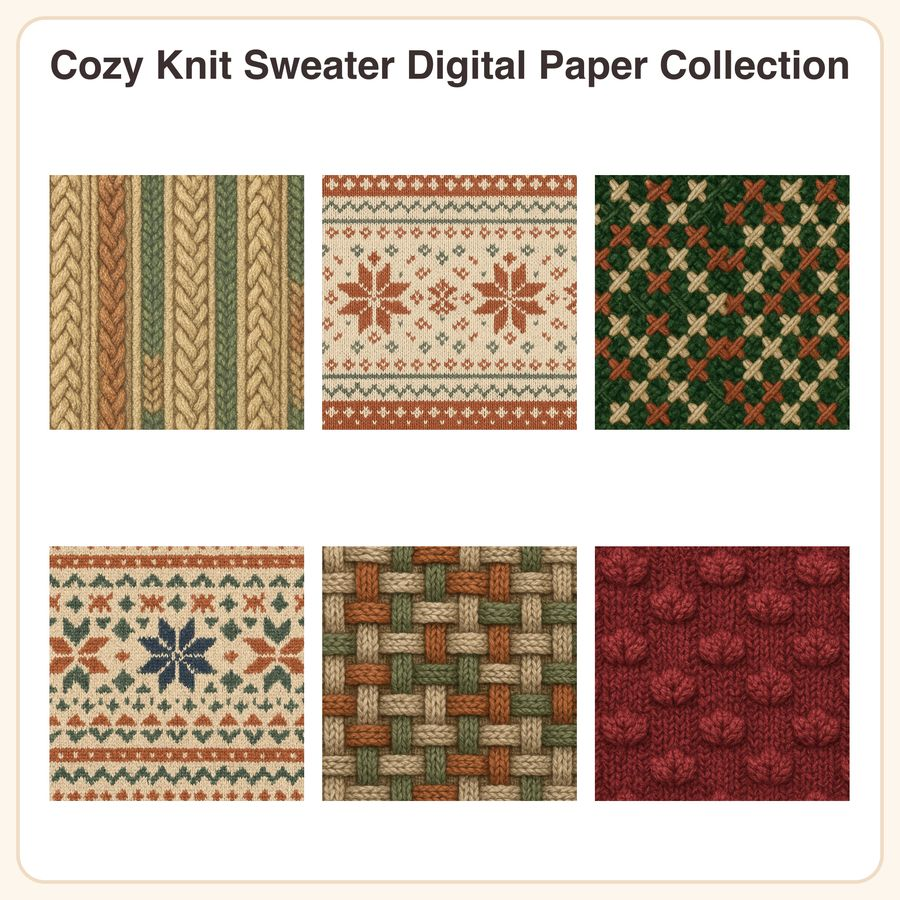

$4.50
View on EtsyBring the warmth of a favorite winter sweater to your next project! This digital paper pack features 6 hand-drawn knit and cross-stitch textures in a cozy heathered wool palette — perfect for cozy-season cards, tags, planners, and packaging. What's included: • 6 seamless patterns, each as a 3072px square JPEG (12x12in @ 300dpi) • 6 matching repeatable PNG tiles for custom resizing/tiling • Designs: cable knit ribbing (oatmeal), fair isle snowflake border (rust & cream), chunky cross-stitch weave (forest green), nordic star fair isle motif (cream & navy), basketweave knit texture (heather grey), popcorn stitch pattern (cranberry) How to use: Open in any program that supports JPEG/PNG (Photoshop, Procreate, Canva, Cricut Design Space, etc). Use as backgrounds for cards, tags, gift wrap, planner pages, packaging, and more. PNG tiles are seamless and can be scaled/tiled to any size. License: For personal use and small-business commercial use (up to 500 finished items per design). Do not resell, redistribute, or share the digital files themselves in any form. Honest disclosure: These patterns were designed by our small shop with the help of AI tools as part of our creative process. No physical item will be shipped — this is a digital download only.